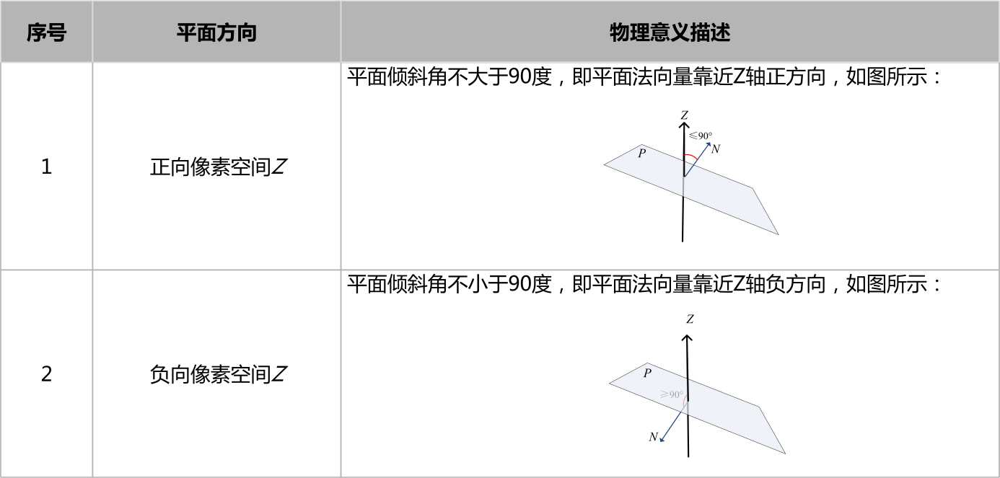

通用平面拟合工具集成了带局外点平面拟合工具以及平面拟合工具2，功能是在深度图像固定区域内拟合一个或多个平面，供后续测量工具使用。
带局外点平面拟合工具可以剔除深度数据图像中的局外点，根据局内点数据计算得到三维平面的解析表达 式，从而能够在这个基平面上进行投影、高度测量和体积测量等后续操作。
多区域平面拟合工具是根据若干个三维空间点计算得到三维平面的解析表达式，可以对平面拟合区域的形状和特征等进行配置。如下图所示，总共有四个拟合区域，这四个区域的形状分别是仿射矩形、多边形、多边形、椭圆形，可以用这四个区域内的特征点（如均值、中值等）或者所有数据来拟合平面。多区域平面拟合工具对实际项目中，基平面形成方式的多样化提供了支持。
一般大多数项目选择带局外点平面拟合即可；此工具可以过滤局外点带来的干扰，以保证拟合平面的稳定性。
多区域平面拟合主要是针对多区域ROI高度测量项目开发使用的，特点是每个ROI区域都可以独自设定合适的拟合参数，如有此必要再选择使用。
选择带局外点平面拟合工具时，默认不启用三维点集拟合，参数链输入深度图像及二维线性变换；若启用三维点集拟合，则参数链需要输入3D点的集合。
选择多区域平面拟合时，参数链输入深度图像及二维线性变换。
平面方向是指最终得到拟合平面结果的法向量的正负方向，一般默认即可。如需要用到法向量结果再进行设置。

| 参数名称 | 参数描述 |
|---|---|
| 启用三维点集拟合 | 选择“是”，参数链中显示输入三维点集参数，并使用该三维点集进行平面拟合。 |
| 局外点判定距离 | 参与拟合的深度数据点到拟合平面距离的最大值 |
| 结果置信度 | 衡量使用内点构造拟合平面的可信程度，置信度越大，拟合平面越可靠 |
| 局外点占比 | 局外点占总深度数据点的比例 |
| ROI类型 | 待拟合区域，分为8种：整幅图像、矩形、仿射矩形、圆形、圆环段、椭圆、多边形、多仿射矩形。 |
| 启用掩膜 | 用于过滤不需要拟合的区域，对该部分添加掩膜 |
| 启用采样 | 是否进行采样拟合，选择“是”，则显示采样半宽参数 |
| 采样距离 | 每隔多少距离采样一次，可以缩短平面拟合时间 |
相关参数示意：
距离阈值：指设定点到拟合平面距离的最大值；
局外点：指深度数据点到拟合平面的距离不满足距离阈值的点；
内点：指深度数据点到拟合平面的距离在距离阈值之内的点；
局外点比例：局外点占总深度数据点的比例，其中，内点与外点的和为总深度数据点；
置信度：衡量使用内点构造拟合平面的可信程度，置信度越大，拟合平面越可靠。
| 参数名称 | 参数描述 |
|---|---|
| ROI数量 | 该参数指定用于拟合平面的ROI数量，最多支持40个ROI |
| ROI索引 | 当前选择的ROI及参数索引号，该参数用于选择第i个拟合区域，并对其参数进行设置 |
| ROI类型 | 待拟合区域，分为6种：矩形、仿射矩形、圆形、圆环段、椭圆、多边形。 |
| 拟合点 | 选取ROI区域内的某种特征点进行平面拟合，分为6种：均值、中值、质心、Z最大、Z最小、所有数据 |
| 区间上/下限 | 拟合区域的深度数据按照Z分量从小到大排序，然后再获取位于区间下限(start%) ~ 区间上限(end%)的深度数据的均值，中值等特征点。取值范围为下限[0,100)，上限(0,100]，且下限小于上限 |
| 相同属性 | 相同属性勾选后，所有的ROI形状大小保持一致以及对应的拟合参数全部统一，方便前期调参。调完后建议关闭勾选。 |
相关参数示意
拟合区间上/下限：设区间范围为[start%, end%]，则只有位于区间范围内的数据才是有效的；如图2所示，当对拟合区域进行参数配置时，将区域内的深度数据按照Z分量从小到大进行排序，然后再获取位于start% ~ end%的深度数据的均值，中值等特征点。
| 参数名称 | 参数描述 |
|---|---|
| 深度图像 | 参与平面拟合的深度图像 |
| 拟合平面 | 输出拟合平面结果，包括平面的法向量、偏移量、倾斜角、旋转角 |
| 平面度 | 输出平面的平面度，即最大偏移-最小偏移，单位：mm |
| RMS误差 | 输出平面的拟合误差值 |
| 拟合点数 | 输出平面拟合中参与拟合的点的数量 |
| 执行结果 | 工具执行结果 |
| 执行时间 | 工具执行时间 |
相关参数示意
法向量：垂直于平面的向量N，表示平面在三维空间中的方向，如图2(a)所示。
倾斜角：Z轴正方向按顺时针方向与平面法向量N的夹角φ，取值范围为：[0,π] ，如图2(b)所示。
旋转角：X轴正方向按逆时针方向与法向量的投影向量N0的夹角θ，取值范围为：[0, 2π) ，如图2(b)所示。
偏移量：将原点移动到当前平面P上的距离偏移，若移动方向与法向量方向相同，偏移量为正；否则为负，如图2©、(d)所示。
无
参见“\Samples\3D\深度图\通用平面拟合工具.gvp”